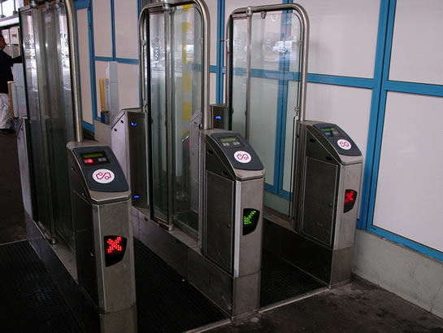
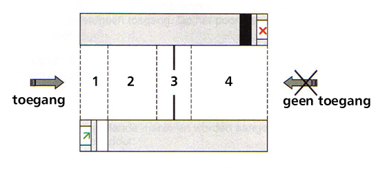
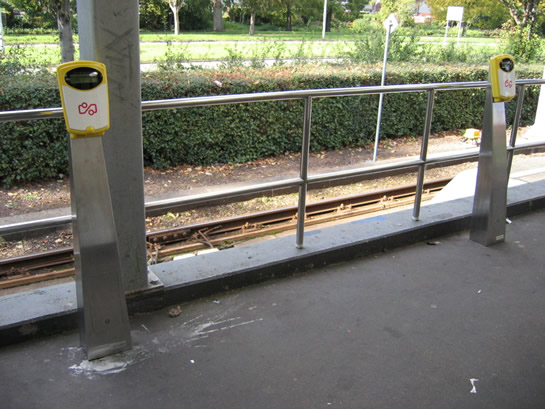
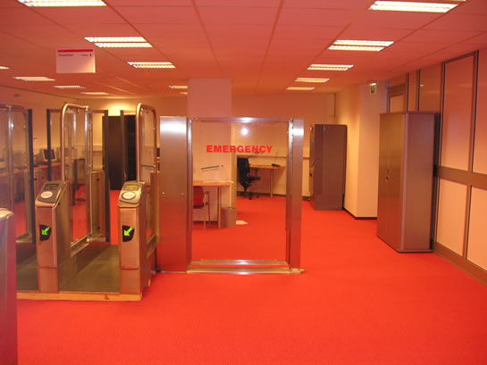
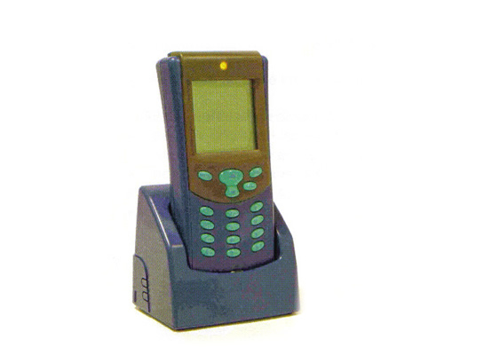

Invoering OV-chipkaart
Sinds 29 januari 2009 is het niet meer mogelijk om zonder OV-chipkaart in de Rotterdamse metro te reizen. Na ruim drie jaar van testen, testen en nogmaals testen, is het systeem definitief ingevoerd in de metro. Dit artikel legt de werking van de OV-chipkaart en de randapparatuur uit.
|
Inhoud
|
|
|---|---|
|
|
Doel van de OV-Chipkaart
De OV-chipkaart is een nieuw betaalmiddel om het openbaar vervoer veiliger te maken en makkelijker te gebruiken. Diverse aanpassingen zijn ingevoerd met de OV-chipkaart. Zo zijn de meeste metrostations voorzien van tourniquets. De sneltramstations zijn voorzien van kaartlezers, evenals enkele liften. Na de invoering van de OV-chipkaart, die 29 januari heeft plaatsgevonden, wordt de kaart geleidelijk ingevoerd in heel Nederland. De NS zijn bezig met het plaatsen van poortjes en kaartlezers. In de Amsterdamse metro kan ook al gebruik gemaakt worden van de kaart. Steeds meer openbaar vervoerbrijven stappen over op de chipkaart. De verwachting is dat tegen het eind van 2014 overal in het land gereisd kan worden met de kaart.
Toegangspoortjes
Op deze projectpagina gaan we alleen in op de OV-chipkaart apparatuur van de Rotterdamse metro. Op de Rotterdamse metrostations zijn poortjes geplaatst. Dit om te voorkomen dat mensen zonder kaartje gebruik kunnen maken van de metro. Per station zijn vele berekeningen gemaakt over het aantal poortjes dat geplaatst moet worden, en nog belangrijker: waar precies. Op een druk station worden vanzelfsprekend meer poortjes geplaatst dan op een minder druk station.

De toegangspoortjes die staan op de Rotterdamse metrostations, met uitzondering van de sneltramstations.
Werking van de OV-chipkaart
Zorg dat je een geldig vervoersbewijs bezit, waar voldoende saldo voor de reis op staat of een ander geldig reisproduct (bijvoorbeeld een abonnement, dagkaart, kortingsabonnement of twee-metroreizen). Loop naar het poortje of de kaartlezer en hou de kaart voor het logo van de OV-chipkaart. Een vriendelijke pieptoon zal aangeven dat de kaart geldig is, en de deuren van het poortje zullen zich openen in de looprichting. Een kaartlezer zal slechts groene lampjes tonen. In het poortje zitten verschillende sensoren die registreren of het poortje gepasseerd is of niet. Na het passeren sluiten de deuren zich weer. Is de kaart niet geldig dan zal de poort een onvriendelijke pieptoon laten horen.
Met uitchecken gebeurt hetzelfde, echter dan wordt het reisbedrag afgeschreven. Beknelling tussen de deurtjes is niet mogelijk omdat er uit veiligheidsoverwegingen een openingsmarge van 15 cm tussen de deuren zit. Tevens sluiten de deuren niet als zone 3 van de sensoren een object registreert (zoals hieronder afgebeeld).

1: Ingangzone. 2: doorloopzone, als er niet ingecheckt is zal er een harde zoemer aan gaan. 3: veiligheidszone, zijn de sensoren hier in werking, dan zullen de deuren zich niet sluiten. 4:uitgangszone, bevestigt dat de reiziger gepasseerd is.
Kaartlezers
Op de stations waar geen poortjes staan, zijn kaartlezers geplaatst. De kaartlezers worden gebruikt om in- en uit te checken. Ze zijn van hetzelfde type als de kaartlezers in de bus en tram hangen. De kaartlezers zijn geplaatst op de meeste sneltramstations waar het plaatsen van poortjes niet effectief is. De sneltramstations zijn namelijk open en dus toegankelijk. Het plaatsen van poortjes zou alleen maar leiden tot reizigers die over de sporen gaan lopen. Slechts station Alexander is ook voorzien van poortjes. De andere stations hebben dus kaartlezers.
Bij een aantal liften zijn ook kaartlezers geplaatst. De liften zijn niet toegankelijk vanuit de tourniquetzone. In sommige gevallen is er rond de liften een wand met poortjes geplaatst. In de meeste gevallen echter, zijn kaartlezers naast de liftdeuren geplaatst. In de nabije toekomst kan men alleen nog maar gebruik maken van de lift als er wordt in- en uitgecheckt.

De kaartlezers die op de sneltramstations in de Prins Alexanderpolder aanwezig zijn. Deze kaartlezers staan ook op plaatsen in metrostations waar geen ruimte is voor een toegangspoortje.
Calamiteiten
Op de stations kunnen zich altijd calamiteiten voordoen, waardoor het station snel ontruimd moet worden. Veel mensen vragen zich af of ze met de komst van de poortjes opgesloten zullen worden in het station tijdens een calamiteit. Dit is onjuist. Bij stroomuitval zullen de poortjes zich openen, met een noodaccu. Bij de poortjes staan zuilen waarmee de poortjes ook geopend kunnen worden, door een ruitje in te slaan, en op een knop te drukken.
De poortjes worden verder geopend bij storingen. Men hoeft dus nooit bang te zijn voor opsluiting. Via de Centrale Verkeersleiding kunnen de poortjes ook centraal openen, bijvoorbeeld via het BMS-systeem (Beheer Metro Stations). Dit computersysteem wordt gebruikt voor het bedienen van stations op afstand.
Op stations waar bij calamiteiten te weinig doorstroommogelijkheden aanwezig zijn voor een goede vluchtweg, als gevolg van de komst van de poortjes, nooddeuren geplaatst. Deze deuren kunnen geopend worden door:
- een druk van 80 kilogram
- de bediening van het brandalarm
- stroomuitval of andere storingen
- een speciale sleutel

De nooddeur, geplaatst bij de testopstelling in de testruimte van station Oostplein.
Mobiele kaartlezer
Dit apparaat heeft een controleur bij zich dragen om te kijken of iemand zonder in te checken is binnengekomen, bijvoorbeeld op het sneltramtracé, alwaar geen poortjes staan. De controleur heeft met dit apparaat de mogelijkheid om:
- Laatste transacties en reisinformatie bekijken van de gebruiker
- Controleren of er in- dan wel uitgecheckt is. (of er eventueel zwartgereden wordt)
- Een OV-chipkaart in- of uit te checken. Deze functie wordt bijvoorbeeld gebruikt in geval van storing van de poortjes of kaartlezers.
Er zijn meerdere mobiele kaartlezers verbonden met de stationscomputer, die ook weer met de centrale computer is verbonden.

De mobiele kaartlezer.
Stationscomputer
Op bijna ieder station staat een stationscomputer. Deze verzamelt en verstuurt de transacties die zijn gemaakt bij het in- en uitchecken. Ook bedient deze computer apparatuur (poortjes en kaartlezers).
Centrale OV-bedrijfscomputer
Deze computer staat in hierarchie boven alle stationscomputers en verricht vele handelingen. Zo kan deze verkoopproducten versturen naar de stationscomputer. Ook stelt de centrale OV-bedrijfscomputer de Centrale Verkeersleiding in de gelegenheid de apparatuur te bekijken en te bedienen. Daarnaast bewaart en ontvangt de computer de reizigerstransacties en stuurt ze door naar de 'TransLinkSystems'-computers, waarover later meer. Er wordt ook een zgn. 'zwarte lijst' opgesteld, met daarin alle valse of gestolen OV-chipkaarten. De stationscomputer zal deze informatie naar de OV-bedrijfscomputer sturen, die dit weer doorstuurt naar TransLinkSystems.
TransLinkSystems-computer
In de toekomst worden alle centrale OV-bedrijfscomputers gekoppeld aan de TransLinkSystems-computer. De Trans Link Systems computer:
- verzamelt reistransacties;
- verzorgt verrekeningen tussen OV-bedrijven;
- draagt zorg voor het uitgeven van OV-chipkaarten;
- ontvangt de zwarte lijst en verstuurt deze naar andere OV-bedrijven. Zo kan het niet gebeuren dat een kaart die in Rotterdam is geblokkeerd, wel gebruikt kan worden bij Qbuzz of omgekeerd.
Kaartautomaten
Er zijn 2 typen kaartautomaten: een verkoopautomaat en een opwaardeerautomaat, die zijn gefabriceerd door het bedrijf Thales.
Verkoop- en oplaadautomaat
Bij de verkoop- en oplaadautomaat kan de reiziger een anonieme OV-chipkaart of een wegwerpchipkaart kopen. De kaartsoorten behandelen we later. Bij de verkoop- en oplaadautomaat kunnen de volgende acties worden uitgevoerd:
- het huidige saldo opwaarderen;
- OV-chipkaart uitlezen (reissaldo bekijken, reisproducten inzien);
- overige reisproducten opladen (zoals een abonnement of dagkaart).
Betalen bij de verkoopautomaten kan met munten, pinnen met bank/giropas, ChipKnip en creditcard. Er kan niet met papiergeld betaald worden.
Oplaadautomaat
Bij de oplaadautomaat, die minder functies heeft dan de verkoopautomaat, kan een reiziger de OV-chipkaart opladen. Ook kan hier het reissaldo opgewaardeerd en bekeken worden en kan men reisproducten op de kaart laden. Bij deze automaten kan alleen met pinpas, ChipKnip of creditcard betaald worden.

Een oplaadautomaat (links) en een verkoop- en oplaadautomaat (rechts). De verkoop- en oplaadautomaat kenmerkt zich door de extra opening voor een bankpas en de gleuf waar munten in kunnen.
Kaartsoorten
Er bestaan verschillende soorten OV-chipkaarten. De reiziger moet dus een keus maken: welke kaart past het beste bij mij, en waar heb ik het meest aan? Van belang is dat iedere reiziger in het bezit dient te zijn van een OV-chipkaart om een reis te maken, dus: 1 kaart per persoon.
|
Persoonlijke OV-chipkaart |
|
|---|---|
|
|
Technische gegevens
|
|
Reisproducten die op de persoonsgebonden kaart geladen kunnen worden
|
|
|
Doelgroepen
|
|
|
Bijzonderheden
|
|
|
Anonieme OV-chipkaart
|
|
|---|---|
|
Technische gegevens
|
|
|
Reisproducten die op de anonieme OV-chipkaart geladen kunnen worden
|
|
|
Doelgroepen
|
|
|
Bijzonderheden
|
|
|
Wegwerpchipkaart
|
|
|---|---|
|
Technische gegevens
|
|
|
Reisproducten die de wegwerpkaart kan bevatten
|
|
|
Doelgroepen
|
|
|
Bijzonderheden
|
|
Overige informatie
Om in te checken of een reisproduct te laden hoeft de OV-chipkaart niet uit de portemonnee worden gehaald. Door een antenne in de kaart werkt de kaart op een afstand van 10 centimeter. De lees en schrijftransacties worden binnen 0,3 seconden uitgevoerd. Het kan zijn dat de kaart foutmeldingen geeft als men in- of uitcheckt. Er zitten dan pasjes in de portemonnee die eenzelfde soort chip bevatten als de OV-chipkaart. Het poortje of de kaartlezer reageert hier negatief op (rode lampjes, negatief piepje).
Toekomst
Op 11 februari wordt de OV-chipkaart volledig ingevoerd in tram en bus bij de RET en in de bussen van Qbuzz en Connexxion in de stadsregio Rotterdam. Langzaam maar zeker zal het gebied waar de OV-chipkaart gebruikt kan worden, steeds groter worden.